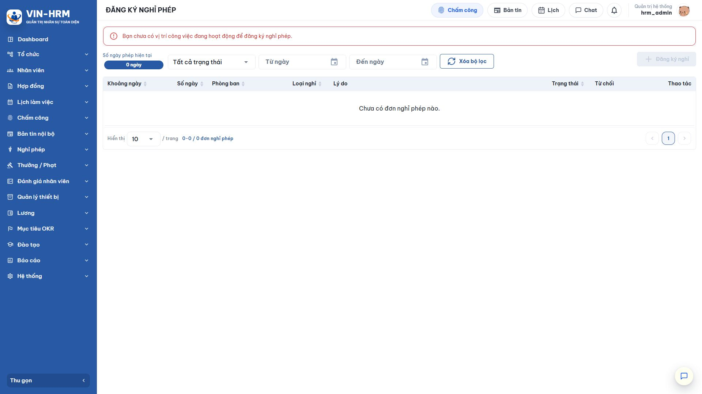
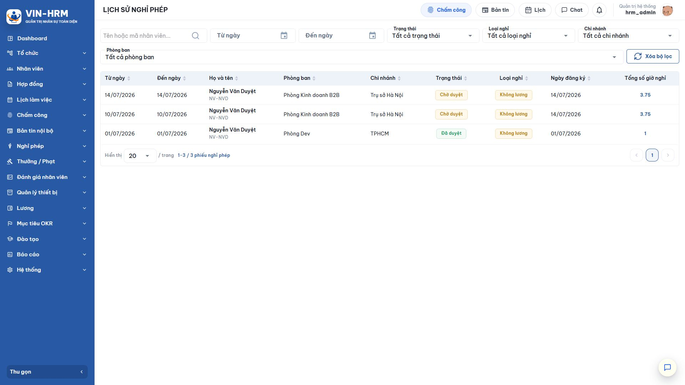

1. Mục đích và phạm vi
Đăng ký nghỉ phép giúp nhân viên tạo đơn dựa trên lịch làm việc thực tế, chọn đúng ca cần nghỉ, xác định nghỉ có lương hoặc không lương, gửi theo quy trình phê duyệt và theo dõi kết quả. Hệ thống quy đổi thời gian nghỉ thành số giờ và số ngày, đồng thời ngăn các đơn trùng lịch hoặc vượt điều kiện.
Tài liệu trình bày toàn bộ vòng đời phía người đăng ký: tạo, lưu nháp, sửa, gửi duyệt, xem trạng thái, thu hồi khi được phép, xóa bản nháp và tra cứu lịch sử. Phần xử lý của người duyệt được hướng dẫn trong tài liệu “Phê duyệt đơn nghỉ phép”.
1.1. Luồng nghiệp vụ tổng quát
| 1. Kiểm tra điều kiện Có hồ sơ công việc, lịch làm việc, chính sách/số dư nếu nghỉ có lương và quy trình duyệt phù hợp. |
| ↓ |
| 2. Tạo đơn và chọn ca nghỉ Chọn khoảng ngày, loại nghỉ, ca làm việc thường và thời gian nghỉ trong từng ca. |
| ↓ |
| 3. Lưu nháp Đơn ở trạng thái Bản nháp; có thể kiểm tra, sửa, xóa hoặc gửi duyệt. |
| ↓ |
| 4. Gửi phê duyệt Hệ thống tạo hồ sơ theo quy trình Duyệt nghỉ phép đã chọn và chuyển đơn sang Chờ duyệt. |
| ↓ |
| 5. Theo dõi kết quả Xem tiến độ, người xử lý, trạng thái và lý do từ chối nếu có. |
| ↓ |
| Được duyệt ↓ Đơn có hiệu lực; nghỉ có lương bị trừ phép; lịch làm việc/chấm công được đồng bộ | HOẶC | Bị từ chối ↓ Không trừ phép, không làm thay đổi lịch; xem lý do và tạo đơn mới nếu cần |
1.2. Ý nghĩa các trạng thái
| Trạng thái | Ý nghĩa | Thao tác thường có |
|---|---|---|
| Bản nháp | Đã lưu nhưng chưa gửi đến người duyệt. | Xem, sửa, gửi phê duyệt hoặc xóa. |
| Chờ duyệt | Đơn đang đi qua một hoặc nhiều bước của quy trình. | Xem chi tiết, xem lịch sử quy trình và thu hồi nếu hệ thống còn cho phép. |
| Đã duyệt | Bước cuối đã chấp thuận; đơn có hiệu lực. | Xem chi tiết và kết quả; không sửa trực tiếp. |
| Từ chối | Người duyệt đã từ chối và quy trình kết thúc. | Xem lý do; tạo đơn mới sau khi điều chỉnh thông tin. |
2. Điều kiện đăng ký và cấu hình liên quan
2.1. Điều kiện bắt buộc
- Tài khoản đăng nhập phải liên kết với hồ sơ nhân viên đang làm việc.
- Nhân viên có phòng ban/bộ phận và thông tin công việc hiệu lực tại ngày đăng ký.
- Khoảng ngày nghỉ đã có lịch làm việc và ít nhất một ca làm việc thường. Ca tăng ca không được dùng để tạo đơn nghỉ phép.
- Nếu chọn Nghỉ có lương, nhân viên phải có chính sách nghỉ phép và số dư đủ tại thời điểm hệ thống kiểm tra.
- Có ít nhất một quy trình loại Duyệt nghỉ phép đang hoạt động và áp dụng cho nhân viên/phạm vi tổ chức tương ứng.
- Khoảng thời gian đăng ký không trùng với một đơn nghỉ khác, kể cả đơn kia đang chờ duyệt.
2.2. Các cấu hình ảnh hưởng
| Cấu hình/dữ liệu | Nơi quản lý | Ảnh hưởng đến đăng ký |
|---|---|---|
| Chính sách nghỉ phép | Nghỉ phép > Chính sách | Quyết định số phép được cộng, mức trần và số dư dùng cho đơn Nghỉ có lương. |
| Lịch làm việc | Lịch làm việc của nhân viên | Là căn cứ sinh danh sách ca có thể chọn và tính số giờ/ngày nghỉ. Không có lịch thì không tạo được chi tiết đơn. |
| Ca làm việc | Ca và lịch làm việc | Quy định giờ bắt đầu, kết thúc, thời lượng ca và loại ca. Chỉ ca thường được đưa vào đơn nghỉ phép. |
| Quy trình Duyệt nghỉ phép | Hệ thống > Quy trình phê duyệt | Quyết định đơn đi qua bao nhiêu bước và ai là người xử lý. Quy trình được chọn ngay trên biểu mẫu tạo đơn. |
| Kỳ tính lương | Phân hệ Lương | Đơn hồi tố không được tạo nếu chi tiết nghỉ nằm trong kỳ lương đã ràng buộc/xử lý theo quy tắc hệ thống. |
| Khi nút Đăng ký nghỉ không dùng được Nguyên nhân thường gặp là tài khoản chưa có hồ sơ nhân viên, chưa có thông tin công việc/phòng ban hiệu lực hoặc không có dữ liệu cần thiết để tạo đơn. Liên hệ nhân sự kiểm tra hồ sơ thay vì thử tạo lặp lại. |
3. Mở danh sách Đăng ký nghỉ phép
Mở Nghỉ phép > Đăng ký nghỉ phép. Phần đầu màn hình cho biết số dư hiện có. Bên dưới là bộ lọc và danh sách các đơn của chính người đăng nhập.

| Khu vực | Cách sử dụng |
|---|---|
| Số dư ngày phép | Tham khảo trước khi tạo đơn Nghỉ có lương. Số dư cuối cùng vẫn được kiểm tra lại khi phê duyệt. |
| Từ ngày/Đến ngày | Lọc các đơn có ngày nghỉ trong khoảng cần tra cứu. |
| Trạng thái | Lọc Bản nháp, Chờ duyệt, Đã duyệt hoặc Từ chối. |
| Loại nghỉ | Lọc Nghỉ có lương hoặc Nghỉ không lương. |
| Xóa bộ lọc | Đưa toàn bộ tiêu chí về mặc định và tải lại danh sách. |
| Đăng ký nghỉ | Mở biểu mẫu tạo đơn mới nếu hồ sơ người dùng đáp ứng điều kiện. |
4. Tạo và lưu nháp đơn nghỉ phép
4.1. Các bước tạo đơn
- Chọn Đăng ký nghỉ.
- Kiểm tra Phòng ban. Khi người dùng có nhiều phạm vi công việc, chọn đúng đơn vị đang áp dụng tại ngày nghỉ.
- Chọn Từ ngày và Đến ngày. Hệ thống tải lịch làm việc trong khoảng này.
- Chọn Loại nghỉ: Nghỉ có lương hoặc Nghỉ không lương.
- Nhập Lý do rõ ràng, tối đa 500 ký tự.
- Chọn Quy trình phê duyệt loại Duyệt nghỉ phép đang hoạt động.
- Trong danh sách ca, đánh dấu ít nhất một ca cần nghỉ và điều chỉnh thời gian nếu chỉ nghỉ một phần ca.
- Kiểm tra tổng số giờ và số ngày quy đổi, sau đó chọn Lưu nháp.
4.2. Giải thích các trường và lựa chọn
| Trường | Ý nghĩa | Lưu ý |
|---|---|---|
| Phòng ban | Đơn vị công tác của người đăng ký, dùng để xác định phạm vi dữ liệu và quy trình phù hợp. | Nếu hiển thị sai, cần sửa thông tin công việc trước khi gửi đơn. |
| Từ ngày/Đến ngày | Khoảng thời gian để hệ thống tìm lịch làm việc. | Đây chưa phải tổng số ngày nghỉ; số ngày thực tế phụ thuộc các ca được chọn. |
| Nghỉ có lương | Thời gian nghỉ được khấu trừ từ số dư ngày phép sau khi duyệt cuối. | Hệ thống kiểm tra số dư. Đơn có thể bị chặn ở bước duyệt cuối nếu số dư không còn đủ. |
| Nghỉ không lương | Thời gian nghỉ được ghi nhận nhưng không trừ số dư phép. | Vẫn phải có lịch làm việc, chọn ca và đi qua quy trình duyệt. |
| Lý do | Thông tin giúp người duyệt hiểu nhu cầu nghỉ. | Viết ngắn gọn, cụ thể; không đưa dữ liệu nhạy cảm không cần thiết. |
| Quy trình phê duyệt | Chuỗi bước xử lý sẽ được tạo khi gửi đơn. | Chỉ các quy trình Duyệt nghỉ phép đang hoạt động và phù hợp phạm vi mới được chọn. |
4.3. Vì sao nên lưu nháp trước?
Lưu nháp tách bước nhập dữ liệu với bước gửi chính thức. Người đăng ký có thể kiểm tra tổng giờ, bổ sung lý do hoặc sửa các ca đã chọn trước khi đơn đến người duyệt. Bản nháp chưa làm giảm số dư và chưa tạo nghĩa vụ xử lý cho người duyệt.
5. Chọn ca nghỉ và đăng ký nghỉ một phần ca
5.1. Cách hệ thống lấy danh sách ca
Sau khi chọn khoảng ngày, hệ thống đọc lịch làm việc của nhân viên và hiển thị các ca làm việc thường. Ca tăng ca bị loại khỏi danh sách vì nghỉ phép được dùng để thay thế thời gian làm việc theo lịch chính, không dùng để xóa nghĩa vụ tăng ca.
5.2. Nghỉ toàn ca
- Đánh dấu ca cần nghỉ.
- Giữ nguyên giờ bắt đầu và kết thúc mặc định bằng thời gian của ca.
- Kiểm tra số giờ nghỉ hệ thống tính cho ca đó.
- Lặp lại với các ca khác nếu đơn kéo dài nhiều ngày.
5.3. Nghỉ một phần ca
- Đánh dấu ca cần nghỉ.
- Điều chỉnh giờ bắt đầu hoặc giờ kết thúc trong phạm vi ca.
- Kiểm tra khoảng nghỉ không đảo ngược và không vượt ra ngoài thời gian ca.
- Đối chiếu tổng số giờ và số ngày quy đổi trước khi lưu.
| Số ngày nghỉ có thể là số thập phân Hệ thống quy đổi từ tổng số giờ nghỉ theo dữ liệu ca làm việc. Vì vậy đơn nghỉ nửa ca hoặc một phần ca có thể hiển thị 0,5 ngày hoặc một giá trị thập phân khác. |
5.4. Các ca không thể chọn
| Tình huống | Lý do |
|---|---|
| Không có lịch trong ngày | Không có thời gian làm việc chuẩn để làm căn cứ tính nghỉ. |
| Chỉ có ca tăng ca | Ca tăng ca không thuộc phạm vi đăng ký nghỉ phép. |
| Ca đã nằm trong đơn khác | Hệ thống ngăn trùng thời gian, kể cả đơn kia chưa được duyệt. |
| Ca quá khứ thuộc kỳ lương đã xử lý | Dữ liệu nghỉ có thể làm thay đổi chấm công và tính lương đã khóa/ràng buộc. |
6. Gửi đơn, thu hồi và xóa đơn
6.1. Gửi phê duyệt
- Tại danh sách, tìm đơn có trạng thái Bản nháp.
- Mở chi tiết hoặc chọn thao tác Gửi phê duyệt.
- Kiểm tra lần cuối ngày nghỉ, loại nghỉ, lý do, quy trình và các ca đã chọn.
- Xác nhận gửi. Đơn chuyển sang Chờ duyệt.
- Mở lịch sử quy trình để biết bước hiện tại và người đang xử lý nếu cần theo dõi.
6.2. Thu hồi đơn đang chờ duyệt
Đơn ở trạng thái Chờ duyệt có thể hiển thị thao tác Thu hồi. Chỉ thu hồi khi thực sự cần sửa hoặc không còn nhu cầu nghỉ. Sau khi thu hồi thành công, kiểm tra trạng thái đơn; hệ thống đưa đơn về trạng thái có thể tiếp tục chỉnh sửa theo quy tắc hiện hành.
| Thu hồi có thể không thực hiện được Đơn đã hoàn tất, đã bị từ chối, đang được xử lý tại thời điểm xung đột hoặc không thuộc quyền của người dùng sẽ không thể thu hồi. Khi đó cần xem trạng thái mới nhất và phối hợp người quản lý/nhân sự. |
6.3. Xóa bản nháp
Chỉ xóa khi đơn chưa gửi và không còn cần sử dụng. Chọn biểu tượng xóa tại dòng Bản nháp, đọc thông báo xác nhận rồi đồng ý. Đơn đã gửi phải xử lý bằng thu hồi hoặc theo luồng phê duyệt; không xóa trực tiếp để bảo đảm lịch sử.
7. Xem kết quả và lịch sử nghỉ phép
7.1. Xem kết quả trên danh sách cá nhân
Trở lại Nghỉ phép > Đăng ký nghỉ phép, lọc theo khoảng ngày hoặc trạng thái. Cột trạng thái cho biết kết quả tổng thể; khu vực tiến độ/lịch sử quy trình cho biết đơn đã qua những bước nào. Nếu bị từ chối, mở chi tiết để đọc lý do trước khi tạo đơn mới.
7.2. Xem lịch sử nghỉ phép
Người có quyền quản lý mở Nghỉ phép > Lịch sử nghỉ phép để tra cứu theo nhân viên, ngày nghỉ, trạng thái, loại nghỉ, chi nhánh và phòng ban. Danh sách giúp đối soát đơn đã phát sinh trên toàn phạm vi được cấp quyền.

| Cột | Ý nghĩa |
|---|---|
| Từ ngày/Đến ngày | Khoảng ngày bao quát các chi tiết nghỉ đã chọn trong đơn. |
| Họ và tên | Nhân viên đứng tên đơn, kèm mã nhân viên để phân biệt. |
| Phòng ban/Chi nhánh | Đơn vị công tác được ghi nhận cho đơn và dùng để lọc, phân quyền. |
| Trạng thái | Chờ duyệt, Đã duyệt hoặc Từ chối. Bản nháp cá nhân thường không phải dữ liệu quản lý hoàn tất. |
| Loại nghỉ | Có lương hoặc Không lương. |
| Ngày đăng ký | Ngày đơn được tạo/gửi trong hệ thống. |
| Tổng số giờ nghỉ | Tổng thời lượng các ca hoặc phần ca đã chọn; có thể mở để xem chi tiết. |
8. Quy tắc kiểm tra, lỗi thường gặp và danh sách kiểm tra
8.1. Quy tắc hệ thống
| Quy tắc | Giải thích |
|---|---|
| Phải chọn ít nhất một ca thường | Khoảng ngày chỉ dùng để tìm lịch; đơn chỉ có nội dung khi người dùng đánh dấu ca cần nghỉ. |
| Không trùng đơn | Một khoảng thời gian làm việc không thể đồng thời nằm trong nhiều đơn nghỉ, kể cả đơn đang chờ duyệt. |
| Giờ nghỉ nằm trong ca | Giờ bắt đầu phải trước giờ kết thúc và không vượt khỏi biên thời gian của ca. |
| Nghỉ có lương cần đủ số dư | Số dư có thể được kiểm tra khi tạo/gửi và chắc chắn được kiểm tra trước khi duyệt cuối để tránh khấu trừ âm không hợp lệ. |
| Đăng ký hồi tố có điều kiện | Phải có lịch làm việc thường và chi tiết chưa thuộc kỳ lương bị ràng buộc. |
8.2. Tình huống thường gặp
| Hiện tượng | Nguyên nhân thường gặp | Cách xử lý |
|---|---|---|
| Không có ca để chọn | Chưa xếp lịch, ngày chỉ có ca tăng ca hoặc lịch không thuộc nhân viên. | Kiểm tra lịch làm việc với quản lý/nhân sự, sau đó tải lại biểu mẫu. |
| Không chọn được Nghỉ có lương | Chưa có chính sách hoặc số dư không đủ. | Kiểm tra Số dư ngày phép và chính sách đang áp dụng. |
| Không thấy quy trình duyệt | Quy trình ngừng hoạt động hoặc phạm vi áp dụng không bao gồm nhân viên. | Liên hệ quản trị viên kiểm tra loại quy trình, trạng thái và phạm vi. |
| Báo trùng thời gian | Ca hoặc khoảng giờ đã nằm trong đơn khác. | Tìm đơn hiện có; thu hồi/sửa đúng đơn thay vì tạo đơn mới chồng lấn. |
| Không đăng ký được ngày quá khứ | Chi tiết đã thuộc kỳ lương bị ràng buộc hoặc không có lịch làm việc. | Trao đổi nhân sự để xử lý theo quy trình điều chỉnh công/lương. |
| Đơn bị từ chối | Thông tin chưa phù hợp hoặc quản lý không chấp thuận. | Đọc lý do từ chối, điều chỉnh và tạo đơn mới; đơn cũ vẫn được giữ trong lịch sử. |
8.3. Danh sách kiểm tra trước khi gửi
- □ Phòng ban và khoảng ngày đúng với thông tin công việc hiện tại.
- □ Đã chọn đúng Nghỉ có lương hoặc Nghỉ không lương.
- □ Số dư đủ nếu đăng ký Nghỉ có lương.
- □ Đã chọn đầy đủ ca nghỉ; không chọn ca tăng ca.
- □ Giờ nghỉ một phần ca nằm trong thời gian ca.
- □ Tổng số giờ và số ngày quy đổi đúng nhu cầu.
- □ Lý do rõ ràng và quy trình phê duyệt đúng.
- □ Không có đơn khác trùng khoảng thời gian.